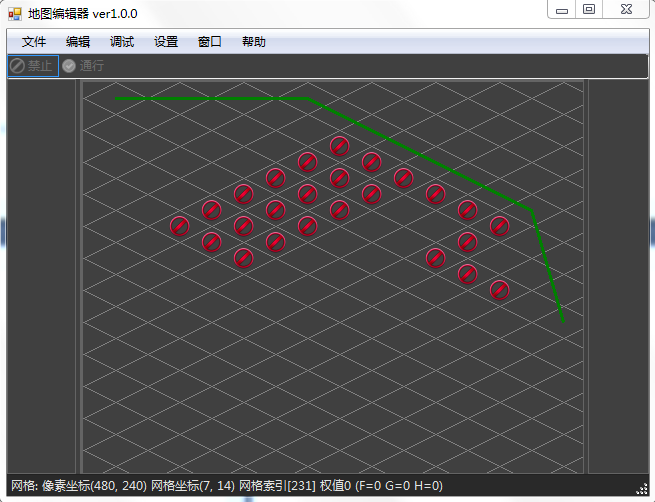

A*寻路算法
作者：追风剑情 发布于：2016-8-13 11:36 分类：Algorithms
一、定义地图文件格式
using System;
using System.Collections.Generic;
using System.Linq;
using System.Text;
namespace MapEditor.Map
{
/// <summary>
/// 地图文件
/// </summary>
public class MapFile
{
public MapHeader header = new MapHeader();
public Grid[] grids;
}
/// <summary>
/// 地图文件头信息
/// </summary>
public class MapHeader
{
public int version = 1;
public int type = 1;
public string name = "未命名";
public int width = 1080;
public int height = 960;
public int tileWidth = 64;
public int tileHeight = 32;
//2.5D行数和列数
public int rows = 10;
public int cols = 10;
//2D行数和列数
public int rows2d = 10;
public int cols2d = 10;
public string background = "";
}
/// <summary>
/// 网格
/// </summary>
public class Grid
{
//网格索引
public int index = 0;
//网格像素坐标
public int px = 0;
public int py = 0;
//网格坐标
public int gx = 0;
public int gy = 0;
//权值
public int weight = 0;
//贴图名称
public string tile = "";
#region 以下字段用于A*寻路
//上一个节点索引
public int prev = 0;
//起点到当前点的移动代价值
public int g = 0;
//当前点到终点的移动代价值
public int h = 0;
//起点到终点的移动代价值
public int f = 0;
#endregion
}
}
二、写个像素坐标与2.5D网格坐标相互转换的工具类
using System;
using System.Collections.Generic;
using System.Linq;
using System.Text;
using System.Drawing;
namespace MapEditor.Map
{
/// <summary>
/// 2.5D地图坐标转换工具类
/// </summary>
public class CoordinateUtil
{
/// <summary>
/// 像素坐标转网格坐标
/// </summary>
/// <param name="tileWidth">网格宽度</param>
/// <param name="tileHeight">网格高度</param>
/// <param name="px">像素x坐标</param>
/// <param name="py">像素y坐标</param>
/// <returns></returns>
public static Point GetCellPoint(int tileWidth, int tileHeight, int px, int py)
{
int xtile = 0; //网格的x坐标
int ytile = 0; //网格的y坐标
int cx, cy, rx, ry;
cx = (int)(px / tileWidth) * tileWidth + tileWidth/2; //计算出当前X所在的以tileWidth为宽的矩形的中心的X坐标
cy = (int)(py / tileHeight) * tileHeight + tileHeight/2;//计算出当前Y所在的以tileHeight为高的矩形的中心的Y坐标
rx = (px - cx) * tileHeight/2;
ry = (py - cy) * tileWidth/2;
if (Math.Abs(rx)+Math.Abs(ry) <= tileWidth * tileHeight/4)//<=上三角面积
{
xtile = (int)(px / tileWidth);
ytile = (int)(py / tileHeight) * 2;
}
else
{//偶行
px = px - tileWidth/2;
xtile = (int)(px / tileWidth) + 1;
py = py - tileHeight/2;
ytile = (int)(py / tileHeight) * 2 + 1;
}
return new Point(xtile - (ytile&1), ytile);
}
/// <summary>
/// 网格坐标转像素坐标
/// </summary>
/// <param name="tileWidth">网格宽度</param>
/// <param name="tileHeight">网格高度</param>
/// <param name="tx">网格x坐标</param>
/// <param name="ty">网格y坐标</param>
/// <returns></returns>
public static Point GetPixelPoint(int tileWidth, int tileHeight, int tx, int ty)
{
//偶数行tile中心
int tileCenter = (tx * tileWidth) + tileWidth/2;
// x象素 如果为奇数行加半个宽
int xPixel = tileCenter + (ty&1) * tileWidth/2;
// y象素
int yPixel = (ty + 1) * tileHeight/2;
return new Point(xPixel, yPixel);
}
/// <summary>
/// 根据网格索引取得网格坐标
/// </summary>
/// <param name="gindex">网格索引</param>
/// <param name="cols">网格列数</param>
/// <param name="rows">网格行数</param>
public static Point GetICellPoint( int gindex, int cols )
{
int xtile = gindex % cols;
int ytile = gindex / cols;
return new Point(xtile, ytile);
}
/// <summary>
/// 根据网格索引取得象素坐标
/// </summary>
/// <param name="gindex">网格索引</param>
/// <param name="cols">网格列数</param>
/// <param name="rows">网格行数</param>
/// <param name="tileWidth">网格宽度</param>
/// <param name="tileHeight">网格高度</param>
/// <returns></returns>
public static Point GetIPixelPoint( int gindex, int cols, int rows, int tileWidth, int tileHeight )
{
Point cellPoint = GetICellPoint(gindex, cols);
Point pixelPoint = GetPixelPoint(tileWidth, tileHeight, cellPoint.X, cellPoint.Y);
return pixelPoint;
}
/// <summary>
/// 根据网格坐标取得网格索引
/// </summary>
/// <param name="gx">网格x坐标</param>
/// <param name="gy">网格y坐标</param>
/// <param name="cols">网格列数</param>
/// <returns></returns>
public static int GetCellIndex( int gx, int gy, int cols )
{
int gindex = gy * cols + gx;
return gindex;
}
/// <summary>
/// 根据像素坐标取得网格索引
/// </summary>
public static int GetIndexPixel(int px, int py, int tileWidth, int tileHeight, int cols)
{
Point gp = GetCellPoint(tileWidth, tileHeight, px, py);
int index = GetCellIndex(gp.X, gp.Y, cols);
return index;
}
}
}
三、A*算法实现
using System;
using System.Collections.Generic;
using System.Linq;
using System.Text;
using System.Drawing;
namespace MapEditor.Map
{
/// <summary>
/// A*寻路
/// </summary>
public class AStar
{
//最大搜索步数
public static int MAX_FIND_STEP = 5000;
//开启列表
HeapSort openList = new HeapSort();
//关闭列表
Dictionary<int, bool> closeList = new Dictionary<int, bool>();
public List<Grid> Find(MapFile map, Grid start, Grid end)
{
Console.WriteLine("target index="+end.index);
if (start.index == end.index)
{
start.prev = -1;
return BackTrack(map, start);
}
List<Grid> path = null;
int step = 0;
openList.Clear();
closeList.Clear();
start.prev = -1;
start.g = 0;
Grid curGrid = start;
openList.Push(curGrid);
while (curGrid != null)
{
//(1)从开启列表中取出f值最小的节点
curGrid = openList.Shift();
Console.WriteLine("Shift index={0}, f={1}", curGrid.index, curGrid.f);
//(2)当前节点的周围节点加入到开启列表
Grid target = PushAroundOpenList(map, curGrid, end);
if (null != target) {//是否搜索到目标格
path = BackTrack(map, target);
break;
}
//(3)当前节点加入到关闭列表
if (!closeList.ContainsKey(curGrid.index))
closeList.Add(curGrid.index, true);
step++;
if (step > MAX_FIND_STEP)
{
Console.WriteLine("停止搜索，超过最大搜索步数 MAX_FIND_STEP=" + MAX_FIND_STEP);
break;
}
}
return path;
}
//把周围的网格加入开启列表
Grid PushAroundOpenList(MapFile map, Grid cur, Grid end)
{
//计算出周围8向网格的索引号
int cols = map.header.cols;
int rows = map.header.rows;
int maxIndex = cols * rows - 1;//地图网格最大索引号
int index_u = cur.index - cols*2;//上
int index_d = cur.index + cols*2;//下
int index_l = cur.index - 1;//左
int index_r = cur.index + 1;//右
int index_lu=0, index_ld=0, index_ru=0, index_rd=0;
if ((cur.gy & 1) > 0)//奇行
{
index_lu = cur.index - cols;//左上
index_ld = cur.index + cols;//左下
index_ru = cur.index - cols + 1;//右上
index_rd = cur.index + cols + 1;//右下
}
else
{
index_lu = cur.index - cols - 1;//左上
index_ld = cur.index + cols - 1;//左下
index_ru = cur.index - cols;//右上
index_rd = cur.index + cols;//右下
}
//判断周围节点中是否包含终点
int[] around = new int[8] { index_u, index_d, index_l, index_r, index_lu, index_ld, index_ru, index_rd };
for (int i = 0; i < around.Length; i++)
{
if (around[i] == end.index)
{
end.prev = cur.index;
return end;
}
}
//周围网格加入开启列表
if (!closeList.ContainsKey(index_u) && index_u >= 0 && map.grids[index_u].weight == 0)
CheckInOpenList(cur, map.grids[index_u], end);
if (!closeList.ContainsKey(index_d) && index_d <= maxIndex && map.grids[index_d].weight == 0)
CheckInOpenList(cur, map.grids[index_d], end);
if (!closeList.ContainsKey(index_l) && index_l >= 0 && map.grids[index_l].weight == 0)
CheckInOpenList(cur, map.grids[index_l], end);
if (!closeList.ContainsKey(index_r) && index_r <= maxIndex && map.grids[index_r].weight == 0)
CheckInOpenList(cur, map.grids[index_r], end);
if (!closeList.ContainsKey(index_lu) && index_lu >= 0 && map.grids[index_lu].weight == 0)
CheckInOpenList(cur, map.grids[index_lu], end);
if (!closeList.ContainsKey(index_ld) && index_ld >= 0 && index_ld <= maxIndex && map.grids[index_ld].weight == 0)
CheckInOpenList(cur, map.grids[index_ld], end);
if (!closeList.ContainsKey(index_ru) && index_ru >= 0 && map.grids[index_ru].weight == 0)
CheckInOpenList(cur, map.grids[index_ru], end);
if (!closeList.ContainsKey(index_rd) && index_rd >= 0 && index_rd <= maxIndex && map.grids[index_rd].weight == 0)
CheckInOpenList(cur, map.grids[index_rd], end);
return null;
}
void CheckInOpenList(Grid cur, Grid ag, Grid end, int g=1)
{
if (openList.Contains(ag.index))
{
if (cur.g + g < ag.g)
{
ag.g = cur.g + g;
ag.prev = cur.index;
}
}
else
{
ag.prev = cur.index;
ag.g = cur.g + g;
ag.h = ChebyshevDistance(ag.px, ag.py, end.px, end.py);
ag.f = ag.g + ag.h;
openList.Push(ag);
}
}
//路径回溯
List<Grid> BackTrack(MapFile map, Grid end)
{
List<Grid> list = new List<Grid>();
Grid cur = end;
while(cur.prev != -1){
Console.Write("{0}(px:{1},py:{2})->", cur.index, cur.px, cur.py);
list.Add(cur);
cur = map.grids[cur.prev];
}
list.Add(cur);
if (list.Count > 2)
SmoothPath(map, list);
return list;
}
#region 距离评估函数
//曼哈顿距离
int ManhattanDistance(int x1, int y1, int x2, int y2)
{
return Math.Abs(x2 - x1) + Math.Abs(y2 - y1);
}
//欧氏几何平面距离(欧几里得距离)
int EuclideanDistance(int x1, int y1, int x2, int y2)
{
return (int)Math.Sqrt((x2-x1)*(x2-x1)+(y2-y1)*(y2-y1));
}
int EuclideanSquareDistance(int x1, int y1, int x2, int y2)
{
return (x2 - x1) * (x2 - x1) + (y2 - y1) * (y2 - y1);
}
//切比雪夫距离
int ChebyshevDistance(int x1, int y1, int x2, int y2)
{
return Math.Max(Math.Abs(x2-x1), Math.Abs(y2-y1));
}
#endregion
#region 路径平滑处理
void SmoothPath(MapFile map, List<Grid> path)
{
RemoveStraightLine(map, path);
RemoveTurn(map, path);
}
//移除同线的节点
void RemoveStraightLine(MapFile map, List<Grid> path)
{
int i = 0;
int count;
while (i < (count= path.Count) - 2)
{
for (int j = i + 1, k = i + 2; k < count; j++, k++)
{
if (path[j].px - path[j - 1].px != path[k].px - path[j].px ||
path[j].py - path[j - 1].py != path[k].py - path[j].py)
{
int n = j - i - 1;
if(n > 0)
path.RemoveRange(i + 1, n);
break;
}
}
i++;
}
}
//移除多余拐点
void RemoveTurn(MapFile map, List<Grid> path)
{
int i = 0;
int j = path.Count - 1;
while (j > i + 1)
{
for (; j > 0; j--)
{
if(j <= i + 1)
break;
if (VisualDetection(map, path[i], path[j]))
{
int n = j - i - 1;//j - (i + 1);
for (int k = 0; k < n; k++)
Console.WriteLine("移除拐点 {0}", path[i+1+k].index);
path.RemoveRange(i + 1, n);
break;
}
}
i++;
j = path.Count - 1;
}
}
//可视探测
bool VisualDetection(MapFile map, Grid g1, Grid g2)
{
int d = map.header.tileHeight / 2;//探测距离增量
int dline = (int)CalLineDistance(g1.px, g1.py, g2.px, g2.py);
int dtimes = dline / d;//两拐点间探测次数
int deltaX = (g2.px - g1.px) / dtimes;
int deltaY = (g2.py - g1.py) / dtimes;
int dx = g1.px, dy = g1.py;//当前探测点坐标
Console.WriteLine("开始探测: ");
while (dtimes > 0)
{
dx += deltaX;
dy += deltaY;
int index = CoordinateUtil.GetIndexPixel(dx, dy, map.header.tileWidth, map.header.tileHeight, map.header.cols);
Grid g = map.grids[index];
Console.Write(index + "->");
if (g.weight > 0)
return false;
dtimes--;
}
return true;
}
//计算两点间距离
double CalLineDistance(int x1, int y1, int x2, int y2)
{
return Math.Sqrt((x2 - x1) * (x2 - x1) + (y2 - y1) * (y2 - y1));
}
#endregion
}
/// <summary>
/// 二叉堆
/// </summary>
class HeapSort
{
List<Grid> R;
//声明个字典用来快速检查元素是否已在开启列表中。
Dictionary<int, bool> openList = new Dictionary<int, bool>();
public HeapSort()
{
R = new List<Grid>();
//堆排序不会用到0号元素，这里设个占位符。
R.Add(null);
}
public void Clear()
{
openList.Clear();
R.Clear();
R.Add(null);
}
public bool Contains(int index)
{
return openList.ContainsKey(index);
}
//筛选方法
private void SiftLess(List<Grid> R, int low, int high)
{
int i = low, j = 2 * i;
Grid tmp = R[i];
while (j <= high)
{
if (j < high && R[j].f > R[j + 1].f)
{
j++;
}
if (tmp.f > R[j].f)
{
R[i] = R[j];
i = j;
j = 2 * i;
}
else
{
break;
}
}
R[i] = tmp;
}
//添加元素
public void Push(Grid value)
{
if (openList.ContainsKey(value.index))
return;
openList.Add(value.index, true);
R.Add(value);
int high = R.Count - 1;
int i = high / 2;//最后一个元素的父节点索引
int j = high;//最后一个元素索引
Grid tmp;
while (i >= 1)
{
if (R[i].f > R[j].f)
{
tmp = R[i];
R[i] = R[j];
R[j] = tmp;
j = i;
i /= 2;
}
else
{
break;
}
}
Console.WriteLine("Push[1]="+R[1].f);
}
//移除根元素
public Grid Shift()
{
int high = R.Count - 1;
if (high < 1)
return null;
Grid r1;
if (high <= 1)
{
r1 = R[1];
R.RemoveAt(1);
openList.Remove(r1.index);
return r1;
}
r1 = R[1];
R[1] = R[high];
openList.Remove(r1.index);
R.RemoveAt(high);
SiftLess(R, 1, high - 1);
return r1;
}
}
}
运行测试

Demo工程
360云盘分享
https://yunpan.cn/c6IHhimkdh6Xw 访问密码 5039
标签: Algorithms
« 进程间通信——AIDL&IPC
|
LitJson»
日历
最新文章
随机文章
热门文章
分类

存档
- 2022年2月(2)
- 2022年1月(8)
- 2021年12月(5)
- 2021年11月(3)
- 2021年10月(4)
- 2021年9月(9)
- 2021年8月(14)
- 2021年7月(8)
- 2021年6月(5)
- 2021年5月(2)
- 2021年4月(3)
- 2021年3月(7)
- 2021年2月(2)
- 2021年1月(8)
- 2020年12月(7)
- 2020年11月(2)
- 2020年10月(6)
- 2020年9月(9)
- 2020年8月(10)
- 2020年7月(9)
- 2020年6月(18)
- 2020年5月(4)
- 2020年4月(25)
- 2020年3月(38)
- 2020年1月(21)
- 2019年12月(13)
- 2019年11月(29)
- 2019年10月(44)
- 2019年9月(17)
- 2019年8月(18)
- 2019年7月(25)
- 2019年6月(25)
- 2019年5月(17)
- 2019年4月(10)
- 2019年3月(36)
- 2019年2月(35)
- 2019年1月(28)
- 2018年12月(30)
- 2018年11月(22)
- 2018年10月(4)
- 2018年9月(7)
- 2018年8月(13)
- 2018年7月(13)
- 2018年6月(6)
- 2018年5月(5)
- 2018年4月(13)
- 2018年3月(5)
- 2018年2月(3)
- 2018年1月(8)
- 2017年12月(35)
- 2017年11月(17)
- 2017年10月(16)
- 2017年9月(17)
- 2017年8月(20)
- 2017年7月(34)
- 2017年6月(17)
- 2017年5月(15)
- 2017年4月(32)
- 2017年3月(8)
- 2017年2月(2)
- 2017年1月(5)
- 2016年12月(14)
- 2016年11月(26)
- 2016年10月(12)
- 2016年9月(25)
- 2016年8月(32)
- 2016年7月(14)
- 2016年6月(21)
- 2016年5月(17)
- 2016年4月(13)
- 2016年3月(8)
- 2016年2月(8)
- 2016年1月(18)
- 2015年12月(13)
- 2015年11月(15)
- 2015年10月(12)
- 2015年9月(18)
- 2015年8月(21)
- 2015年7月(35)
- 2015年6月(13)
- 2015年5月(9)
- 2015年4月(4)
- 2015年3月(5)
- 2015年2月(4)
- 2015年1月(13)
- 2014年12月(7)
- 2014年11月(5)
- 2014年10月(4)
- 2014年9月(8)
- 2014年8月(16)
- 2014年7月(26)
- 2014年6月(22)
- 2014年5月(28)
- 2014年4月(15)
友情链接
- Unity官网
- Unity圣典
- Unity在线手册
- Unity中文手册(圣典)
- Unity官方中文论坛
- Unity游戏蛮牛用户文档
- Unity下载存档
- Unity引擎源码下载
- Unity服务
- Unity Ads
- wiki.unity3d
- Visual Studio Code官网
- SenseAR开发文档
- MSDN
- C# 参考
- C# 编程指南
- .NET Framework类库
- .NET 文档
- .NET 开发
- WPF官方文档
- uLua
- xLua
- SharpZipLib
- Protobuf-net
- Protobuf.js
- OpenSSL
- OPEN CASCADE
- JSON
- MessagePack
- C在线工具
- 9RIA天地会
- 游戏蛮牛
- GreenVPN
- 聚合数据
- 热云
- 融云
- 腾讯云
- 腾讯开放平台
- 腾讯游戏服务
- 腾讯游戏开发者平台
- 腾讯课堂
- 微信开放平台
- 腾讯实时音视频
- 腾讯即时通信IM
- 微信公众平台技术文档
- 白鹭引擎官网
- 白鹭引擎开放平台
- 白鹭引擎开发文档
- FairyGUI编辑器
- PureMVC-TypeScript
- 讯飞开放平台
- 亲加通讯云
- Cygwin
- Mono开发者联盟
- Scut游戏服务器引擎
- KBEngine游戏服务器引擎
- Photon游戏服务器引擎
- 码云
- SharpSvn
- 腾讯bugly
- 4399原创平台
- 开源中国
- Firebase
- Firebase-Admob-Unity
- google-services-unity
- Firebase SDK for Unity
- Google-Firebase-SDK
- AppsFlyer SDK
- android-repository
- CQASO
- Facebook开发者平台
- gradle下载
- GradleBuildTool下载
- Android Developers
- Google中国开发者
- AndroidDevTools
- Android社区
- Android开发工具
- Google Play Games Services
- Google商店
- Google APIs for Android
- 金钱豹VPN
- TouchSense SDK
- MakeHuman
- Online RSA Key Converter
- Windows UWP应用
- Visual Studio For Unity
- E时代IDC主机
- Open CASCADE Technology
- 慕课网
- 奇优广告联盟
- 阿里云服务器ECS
- 在线免费文字转语音系统
- AI Studio
- 网云穿
- 百度网盘开放平台
- 迅捷画图
- 菜鸟工具
- [CSDN] 程序员研修院
- 华为人脸识别
交流QQ群
-
Flash游戏设计: 86184192
Unity游戏设计: 171855449
游戏设计订阅号

捐赠 (用于支付服务器费用)
-
微信

支持宝

捐赠的朋友可与博主成为微信好友，点击下方【给我写信】给博主留言。